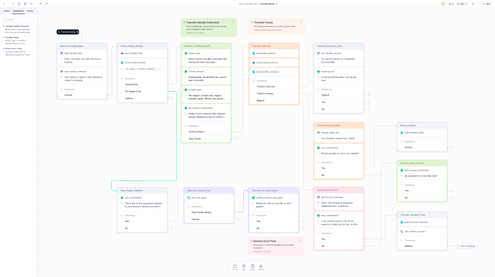
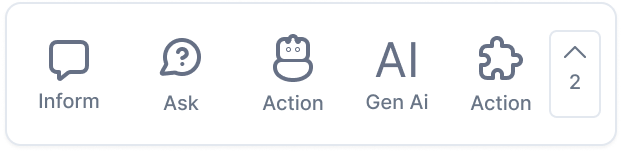
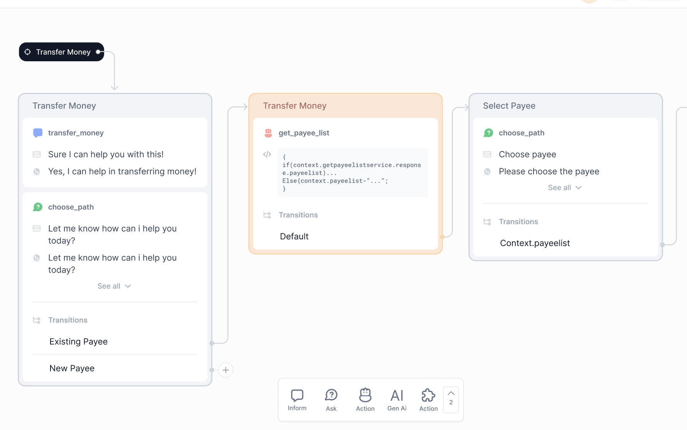
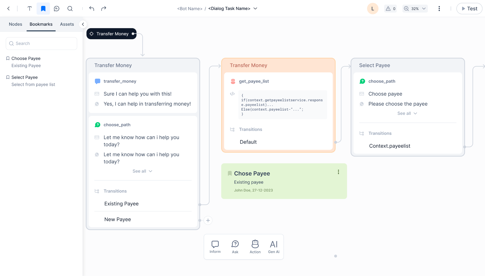

What's New in XO v11¶
Learn about the new features and enhancements included in v11 of Kore.ai Experience Optimization Platform.
All-new Experience Optimization Platform¶
Kore.ai all-new Experience Optimization (XO) Platform is an AI-powered, end-to-end experience optimization Platform for enterprises of any scale to offer best-in-class conversational experiences for customers, employees, and agents. The Platform seamlessly blends conversational AI intelligence and generative AI innovation, offering the tools to create scalable and memorable customer experiences. The Platform is recognized as the world's most secure, credible, and scalable solution for generative and conversational AI. The Platform's business user-friendly, no-code interface allows businesses to construct intelligent virtual assistants, incorporating large language models and generative AI to foster meaningful and continuous conversations in users' preferred languages and channels.
Comprehensive Suite of Products and Services¶
The unified XO Platform offers a comprehensive suite of products, features, and services to help businesses leverage conversational AI intelligence and generative AI innovations to deliver exceptional customer experiences, improve operational efficiency, and drive business growth.
Key Products, Features, and Services offered by the XO Platform:
{kind=link}
Key updates to products and features are summarized below. Click the corresponding tab to see the details.
Automation AI offers sophisticated AI-powered tools for creating Virtual Assistants to handle customer interactions through intelligent automation. You can define specific use cases and utilize advanced Natural Language Processing (NLP) to handle complex interactions. You can also empower virtual assistants to handle interruptions and provide clarifications for more natural dialogues. It also offers testing tools to ensure a smooth and reliable user experience by identifying and fixing issues before deployment.
Key Automation AI updates are summarized below.
All-new Dialog Builder¶
The all-new dialog builder is super intuitive, user-friendly, and visually appealing.
Intuitive Graphical User Interface¶
The all-new intuitive graphical user interface allows users to design conversational flows by dragging and dropping components onto a canvas. This simplifies the process of constructing dialogues, allowing users to visually structure and customize interactions between the AI system and users. It empowers developers and non-technical users alike to design and create conversational flows effortlessly.
- Free-flow Designing empowers users to easily design the flow without worrying too much about the logic at the beginning. The ability to easily connect nodes without having to fully define the transition rule. The transition rule can start with a simple description and can be enforced at the later stages while testing/publishing.
- Infinite Canvas allows designers to logically arrange the flow (based on purpose, objective, etc.) as needed, making it easy for them to review and audit the flows.
- Customizable Connectors featuring options for color, width, and style to enhance clarity, readability, and emphasis.
- Seamless drag and drop of nodes for a smooth experience.

{kind=link}
Node Categorization¶
A streamlined node panel with user-friendly categorizationAsk, Inform, AI, and Integrationprovides clear organization for users.

{kind=link}
Sequencing¶
Enhance organization through the grouping of nodes into coherent sequences. Align nodes logically and provide clear, descriptive names for the sequences to facilitate future reference and comprehension. Provide the ability to clearly read and write the key information like name type, prompts/messages, and transition conditions. Enhance visibility and distinguishability by customizing sequences with color codes. 
{kind=link}
Universal Search¶
The new Universal search (CMD+K) quickly helps find out components, nodes, sequences, variables, etc.

Comments¶
Users can add comments and feedback directly within the dialogue builder. Enhances communication by providing a platform for feedback, suggestions, and discussions on specific elements of the design.
{kind=link}
Bookmarks¶
Bookmarks allow users to organize and reference important information. Users can bookmark frequently visited or crucial content in the canvas with relevant information. Bookmarks help users navigate to content without having to search or browse extensively.

{kind=link}
Notes¶
Add notes to highlight key points or summarize information. Notes can also be used for communication and feedback.
{kind=link}
LLM and Generative AI Framework¶
Guardrails¶
Large language models (LLMs) are powerful AI systems that can be leveraged to offer human-like conversational experiences. The Kore.ai XO Platform offers a wide range of features to leverage the power of LLMs. LLMs are usually pre-trained with a vast corpus of public data sources, and the content is not fully reviewed and curated for correctness and acceptability for enterprise needs. This results in generating harmful, biased, or inappropriate content at times. The XO Platform's Guardrail framework mitigates these risks by validating LLM requests and responses to enforce safety and appropriateness standards.
Guardrails enable responsible and ethical AI practices by allowing developers to easily enable/disable rules and configure settings for different features using LLMs. Additionally, platform users can design and implement fallback behaviors for a feature, such as triggering specific events, if a guardrail detects content that violates set standards.
Learn more
Monitoring¶
It offers comprehensive insights into utilizing Large Language Models (LLMs) and Generative AI features. The framework collects, analyzes, and presents comprehensive data on user interactions, request-response dynamics, and payload details. It enables platform users to track and compare usage across various LLM features and refine prompts and settings to boost performance and user experience.
Learn more
Kore.ais SearchAssist capabilities are now available under Search AI on the XO Platform. Search AI offers AI-powered conversational search tools to quickly and accurately retrieve information from vast datasets and offer the most relevant piece of information to users. Add multiple data sources for building your answer index, including website crawlers, structured data, unstructured documents, catalogs, and knowledge bases. By combining Automation AI (Use Cases) and Search AI (Answers), businesses can create an exceptional, seamless conversational experience for their users.
Key Search AI (Answers) capabilities are summarized below.
Content Extraction Strategies¶
To generate answers using the source data, the ingested data is segmented into smaller segments or chunks to understand better, organize, and efficiently retrieve the most relevant set of data when required. Selecting the most appropriate strategy requires considering several factors, like the type of content, the embedding model to store chunks, the expected length and complexity of user queries and answers, etc.
The application supports various chunk-generation strategies. You have the flexibility to select and customize the strategies based on the format and structure of the ingested data or as per the answers required. You can configure multiple strategies to apply to different types of content. This improves the precision of answers by aligning the strategy to the document characteristics and gives you flexibility and granular control over the answers generated.

Chunk Browser¶
The Chunk Browser provides a tool for observing the extracted chunks from the source data. It gives insight into the extraction process's output and enables subsequent actions like editing and rectifying the chunks.
-
Observation and Verification: You can use the Chunk Browser to inspect and verify the extracted chunks. This step is crucial for ensuring the correctness of the extraction process, the accuracy of the chunks generated, and the preservation of data.

-
Editing of Chunks: You can edit the chunk information directly within the browser interface. This capability can help you add any missed information, edit inaccurate information, or simply enrich the extracted information.

Index Configuration¶
Indexing is the process of generating vectors or embeddings from the extracted chunks and creating a knowledge Index that can be used to generate answers. Vectors or Embeddings are multidimensional numerical representations of the chunks that carry their semantic information. Embedding Models are algorithms that can translate data into vectors. The XO platform supports various embedding models, such as MPNet, LaBSE, and e5, and allows you to choose a model according to your specific needs.
{kind=link}
Answer Generation Strategies¶
Search AI uses LLM to generate answers from the ingested chunks. The efficacy of the response depends on the Chunk Retrieval method and the Answer Generation configuration.
Chunk Retrieval Strategy¶
Choose the preferred chunk retrieval strategy for retrieving answer chunks from the answer index for a given query. Search AI supports Vector Retrieval, which uses cosine similarity scores, and Hybrid Retrieval, which considers patterns and structures in the text. The choice between using vector retrieval and hybrid retrieval depends on various factors, including the nature of the data, the specific requirements of the application, and the available resources.

- Vector Retrieval: In this type of retrieval, we compute the cosine similarity between the query vector and each chunk vector at the time of query, and the resulting scores are used to filter and sort the results. The score ranges from 0 to 1, where 0 indicates no match, and 1 represents a complete match.
- Hybrid Retrieval: In this type of retrieval, multiple approaches are used to find the most relevant chunk corresponding to the query.
Answers Generation¶
Configure the type of answers to be presented to the users:
- Extractive Answers: The topmost chunk retrieved in response to the user query is directly presented to the user as answers. The extractive answers are exact content retrieved from the chunks without any change in text.
- Generative Answers: The top chunks retrieved in response to the user query are sent to the configured LLM, which generates a paraphrased answer from the content in the chunks. Use the following fields to configure Generative Answers.

Search vs. Automation Setting¶
You can either keep Automation First and Answers as a fallback or otherwise.

Contact Center AI (previously Kore.ai SmartAssist) is now a part of the unified XO Platform v11. You can now leverage Automation AI Use Cases and Search AI Answers to automate regular customer queries and seamlessly transfer them to a human agent as needed. The new Campaigns module helps streamline outbound voice and web campaigns. It provides templates and analytics to easily create targeted campaigns, reach audiences efficiently, track performance, and achieve goals more effectively.
The key features and experience changes are summarized below.
Experience Flows¶
Improved Experience Flows¶
To reduce confusion, the OnConnect/Welcome Events have now been merged into the new Experience Flows. With XO v11, the logic typically written in these events can now be easily managed via experience flows.
Updated Flow Builder¶
The Flow Builder interface has been revamped to provide a smoother, more intuitive user experience. The interface is similar to the Dialog Builder, making the transition seamless and effortless.

Enhanced Automation: Conversational Input and Run Automation Nodes Merged, Deflect to Chat Deprecated¶
The automation process is simplified by merging Conversational Input and Run Automation Nodes into a single entity: Automation. This consolidation streamlines bot invocation and aligns with usage patterns observed from existing customers and demo scenarios.
{kind=link}
Deflect to Chat is no longer supported. This change is driven by the limited usage observed among customers, but we remain committed to addressing relevant needs and exploring adding support based on internal use cases.
Centralized Publish Module¶
To ensure consistency, simplify workflow management, and centralize management tasks, we've introduced a centralized Publish Module. All flows can be published from this module.
{kind=link}
Channels¶
Omni-channel Setup¶
With Contact Center AI, you can seamlessly integrate various channels, including voice, chat, email, social media, and custom SDKs, to provide a unified experience for your customers and ensure effortless omnichannel communication.
{kind=link}
Kore.ai Voice Gateway¶
Expand your reach by enabling voice interactions through the Kore.ai Voice Gateway. It helps configure how Contact Center AI handles automation for inbound voice calls. Customers can engage with your contact center using natural language voice commands.
Selective Routing¶
One significant enhancement is the ability to selectively choose whether to direct customers to automation or human assistance. This feature empowers you to optimize customer journeys considering complexity, urgency, or preference.
Support for Digital Channels¶
Our platform is extended to support digital channels such as social media platforms, enterprise messaging apps, and custom SDKs. This allows you to engage with customers wherever they are, enhancing accessibility and convenience.
Integration with 3rd Party IVR Systems¶
Contact Center AI seamlessly integrates with third-party IVR systems, enabling you to leverage existing investments and infrastructure while benefiting from our advanced capabilities.
Role and User Management¶
App Level User Definitions¶
Users can be defined at the app level and assigned necessary roles, providing granular control over access and permissions.
Contact Center Attributes¶
Additional contact center attributes can now be added under the Contact Center section, enhancing customization and tailoring the application to your specific requirements.
Administrator / Admin Role Deprecated¶
The Administrator/Admin role is deprecated. Existing accounts will seamlessly transition to a new custom role with equivalent permissions on Contact Center AI, ensuring continuity and preserving access levels.
Updated Bot Architecture¶
Instance and Automation bots are merged into a single bot. New accounts will require managing only one bot. However, existing accounts that will be migrated will continue to have separate instance and automation bots.
New Campaigns Module¶
The new Campaigns module simplifies and enhances outbound efforts across voice and web channels. It offers tools for creating targeted voice campaigns and proactive web campaigns, supported by easy-to-use templates and comprehensive analytics. This allows businesses to efficiently reach their audience, monitor campaign performance, and achieve their objectives with greater precision and effectiveness.
Voice Campaigns¶
Use the power of voice technology to connect with your audience through personalized messages or interactive experiences. Setting up a new voice campaign is easybegin with a targeted contact list to ensure your message resonates with the right audience.
{kind=link}
Proactive Web Campaigns¶
Elevate your online presence with proactive web campaigns to promote your products, services, or brand. Utilizing digital channels, these campaigns are crafted to increase visibility, generate leads, and build brand awareness, ensuring measurable success.
{kind=link}
You can create proactive web campaigns from scratch in various formats:
{kind=link}
You can also create proactive web campaigns using pre-defined templates. These templates save time and effort while ensuring consistency and brand identity. They are cost-effective, user-friendly, and offer flexibility for customization.
{kind=link}
List Management¶
List management involves organizing and maintaining targeted Contact Lists for efficient outreach while adhering to Do Not Contact (DNC) regulations.
{kind=link}
{kind=link}
Dashboard¶
The campaign dashboard allows campaign managers to obtain an overview of all their campaigns, including their statuswhether they're active, inactive, or completed. This centralized snapshot facilitates effortless monitoring and management.
{kind=link}
You can drill down individual campaigns to get detailed insights.
{kind=link}
Settings¶
The settings allow campaign managers to decide the maximum number of concurrent calls that can be dialed.
{kind=link}
Agent AI (previously Kore.ai AgentAssist) is now a part of the unified XO Platform v11.
It is an AI-powered virtual assistant for contact centers that enhances agent efficiency and service quality. It automates repetitive tasks like information retrieval and transactions and provides real-time customer insights and suggestions. By using Kore.ai's NLP and AI/ML technologies, AgentAI understands customer intent and offers contextually appropriate responses and FAQs. AgentAI operates as a widget within popular contact center platforms, supporting both voice and chat interactions.
The key features and experience changes are summarized below.
Configuration¶
The Configuration section lets users customize the various aspects of Agent AI. This section includes:
- Welcome Events that let you design how the initial interactions with customers are handled.
- Answer Configuration that allows you to fine-tune how the responses are generated and delivered.
- Widget Settings that offer options to customize the appearance and functionality of the Agent AI widget.
Welcome Events¶
Welcome Events are pre-configured messages or prompts that are automatically triggered when a conversation is assigned to an agent in Agent AI. Welcome Events guide agents to handle inquiries effectively by streamlining workflows, lowering their Average Handle Times (AHT), reducing repetition, and contributing to enhanced customer satisfaction. Learn more
Answer Configuration¶
SearchAssist provides an intelligent, contextual, and personalized experience in every interaction across web and mobile channels. You can enhance the search capabilities of Agent AI by integrating it with the SearchAssist application. Learn more
Widget Settings¶
The Agent AI Settings page lets users set the Agent AI widgets appearance. On this page, users can decide what features they want on the widget, how the widgets search functionality should work, the channel-specific settings, the landing page, and the URL opening behavior. Learn more
Channels¶
Kore.ai Voice Gateway¶
Kore.ai Voice Gateway (VG) helps configure how Contact Center AI handles automation for inbound voice calls.
By going to Automation AI > Flows & Channels > Channels > Kore.ai Voice Gateway, you can add phone numbers, set up SIP Transfer, and configure the voice preferences to personalize the Automatic Speech Recognition (ASR) Engine and the voice that plays for your Text-to-Speech (TTS) conversions. In this section, you can enable the virtual assistant on the Voice channel using the built-in voice gateway that allows you to purchase a new phone number or use your existing phone number (with SIP transfer). Learn more
Web/Mobile Client¶
To use any Kore.ai Bot SDKs, you must first register your app to get the authentication credentials to communicate between the Kore.ai bot and your application hosting the bot. The Kore.ai bot SDKs can be used to add a chat widget to your company application that enables users to chat with the application using natural language input. The Kore.ai bots platform interprets the user input, processes the request, and responds to the user. In this section, you can enable the virtual assistant to be on digital channels, including live chat platforms, third-party messengers, and more. Learn more
Experience¶
Agent Coaching¶
The Real-time Agent Coaching feature enables real-time coaching based on the analysis of agent utterances and speech. You can set up specific utterances and speech patterns for Agent AI to take relevant actions, such as providing hints and nudges or emailing the manager when those patterns occur. In this section, you can create and manage Agent Coaching Rules to be triggered during User-Agent Interactions. Learn more
Agent Playbook¶
Contact center agents are expected to provide the best customer experience despite high call volumes and complex interactions. To empower agents in this endeavor, AgentAssist introduces the Playbook featurea standard tool offering structured guidance for handling customer interactions. In this section, you can create and manage the adherence checklist to be triggered for an Agent in a conversation with the user. Learn more
Dashboard¶
The Agent AI Dashboard provides the Agent AI Widgets performance data and the end users (agents and customers) behavioral trends. You can filter data by channel or time period. You can also view the total number of sessions and widget suggestions, the average number of widget suggestions used per session, which automations helped agents resolve customer issues, what the agents are searching for, automation performance results, and agent feedback in the form of likes and dislikes. Learn more
Migration Path for Existing Customers - Upgrade Journey¶
Users will see a banner on the current bots.kore.ai platform prompting them to try the new XO v11 platform at platform.kore.ai, which is the new home for existing bots and creating XO v11 apps with enhanced capabilities. Existing bots open in the old UI on platform.kore.ai and have the same functionality, such as creating dialogs, configurations, publishing, etc. Also, a banner appears inside the bot, allowing users to upgrade it to an XO v11 app.
The upgrade journey involves user consent, downloading a bot backup, a multi-step process to add new capabilities, and a success/failure output with a retry option if needed. Upgrades are currently not allowed for paid bots on standard accounts. Any remaining trial period is transferred to the new app with updated trial conditions.
Upgrade Journey Steps¶
1. Addition of Flows¶
Flows act as entry points for conversations received through channel adapters. For each channel, a unique Welcome Flow is linked to define the user experience. Out of the box, there are predefined Welcome Chat Flow and Welcome Voice Flow options. Flows contain nodes like message nodes to greet users, script nodes to run JavaScript, IVR nodes for voice experience, and more.
For bots being upgraded to XO v11, existing On-connect and Welcome events (like Welcome Event, Facebook Welcome Event, etc.) will be retained. These will be present in the Start Flows (Welcome Chat Flow) as an option called "Use existing event configurations". Users can either honor the existing events or choose to execute the Welcome Chat/Voice Flow by turning off those events.
2. Dialog Builder Upgrade¶
The Dialog Builder used to create Dialog Tasks will be upgraded to the latest version V3. Existing published Dialog Tasks will remain viewable in their original V2 or V1 versions. However, if users want to edit any of those existing Dialog Tasks, they will need to upgrade them to the new V3 Dialog Builder version before making changes.
3. Addition of Search AI¶
For standard accounts, the Basic and Advanced RAG features of Search AI come bundled with the Automation AI module. For enterprise customers, a separate Enterprise Search AI plan purchase is required to access the Search AI product, which is not included by default.
A new "Fallback configuration" is available in App Settings -> App Profile:
- Set Automation AI as the first option, with Search AI as the fallback.
- Set Search AI as the first option, with Automation AI as the fallback.
Based on this configuration, NLP will route user utterances to either Automation AI or Search AI as the primary option, falling back to the other product if needed.
4. Addition of Contact Center AI¶
While upgrading a bot to an XO v11 app, default Contact Center AI components are automatically created behind the scenes: default queue, conditional flows, skill group, agent group, and hours of operation. For standard accounts, these defaults are accessible only if the Contact Center AI product is activated within that app. If not activated, users are prompted for a free trial when clicking Contact Center AI from the product switcher.
For enterprise accounts having a Contact Center AI license, the product and defaults will automatically be available in all apps.
5. Addition of Campaigns Module¶
The Campaigns Module is unavailable immediately after the bot-to-app upgrade. For Standard accounts, users can activate Proactive Web Campaigns by purchasing a paid Contact Center AI subscription. For Enterprise accounts, the Campaigns Module is automatically enabled once they subscribe to the Contact Center AI product.
6. Addition of Agent AI¶
Agent AI is not available by default for standard accounts. Users must first have an Automation AI subscription, and then Agent AI can be added as a paid add-on. Users who are interested in only Agent AI without Automation AI must contact the sales team to initiate the process.
During the bot-to-app upgrade, the following default Agent AI components are created but kept inactive until the product is activated:
- Default playbooks
- Default agent coaching
- Agent Assist channel
7. User Role Management Module¶
When upgrading a bot to an XO v11 app, there are several changes to user roles and permission - updated role names aligned to "App", consolidation of permissions, the addition of new system roles like Agent/Supervisor, and the ability for App Owners to create new account roles.
System Roles:
- Master Admin remains the same
- Bot Owner becomes App Owner (role type "App")
- Bot Developer becomes App Developer (role type "App")
- Bot Tester becomes App Tester (role type "App")
- New roles added: Agent (role type "App"), Supervisor (role type "App")
- Custom roles remain unchanged
Bot Admin Console (BAC) Changes:
- The "Bot" role type is renamed to "App"
- All permissions across products consolidated into one list
- Existing role permissions remain, with additional permissions for other products in the same app
- Users can enable these new cross-product permissions for roles
App Owner Roles:
- New option for admins to allow App Owners to create new account-level roles from the XO v11 app
8. Pricing and Billing Management¶
All accounts start as Standard, with billing managed at the app level. Users can activate and pay for specific products per app based on their chosen plan.
Enterprise accounts are upgraded from Standard by Kore.ai based on signed agreements. Billing is then handled at the account level, with access provided to the signed products and custom limits.
When upgrading bots to XO v11 apps:
- Standard accounts retain their existing XO v10 trial period, provisions (2000 sessions, 2000 voice minutes, 10,000 Search requests), and pay per app.
- Enterprise accounts continue accessing their pre-purchased products and custom limits.
9. Addition of Marketplace¶
With the upgrade to XO v11, users will gain access to a new Marketplace. Here, they can install Dialog Templates and Actions, enable pre-built integrations, and browse various categories for available templates.
10. Addition of Setup Guide¶
After upgrading to the XO v11 platform, a new "Setup Guide" option will be available. This feature provides a step-by-step guide to help new users quickly set up their Virtual Assistant.
11. Implicit Publishing of the App¶
During the upgrade, the bot goes through an automated publishing process:
- The current in-development version is published to check for errors.
- If errors are found, the upgrade is stopped, and the user is notified.
- Assuming no errors, the new XO v11 features are added to the bot.
- Finally, the upgraded bot, now an XO v11 app with the new capabilities, is published again.